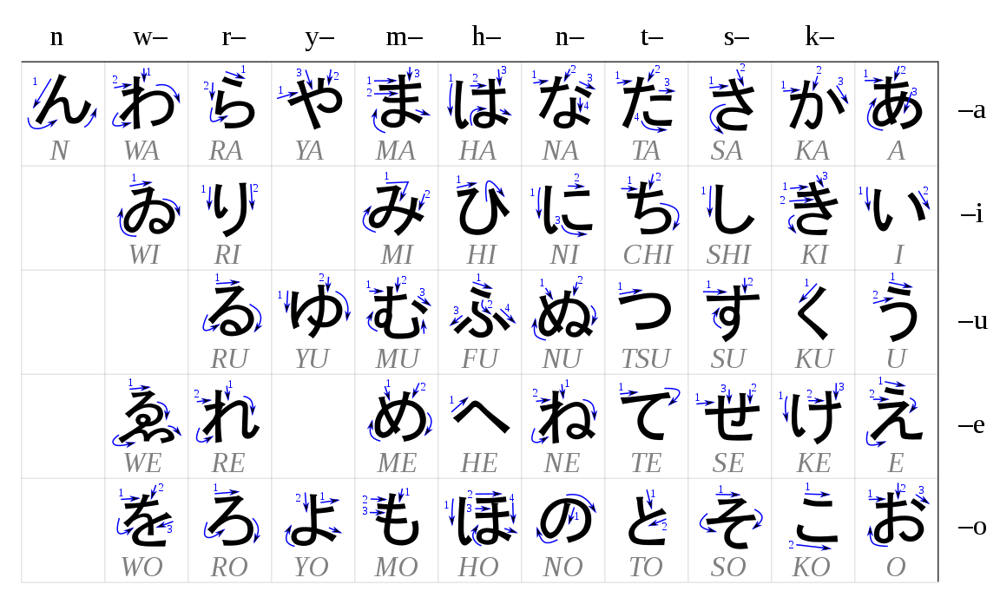
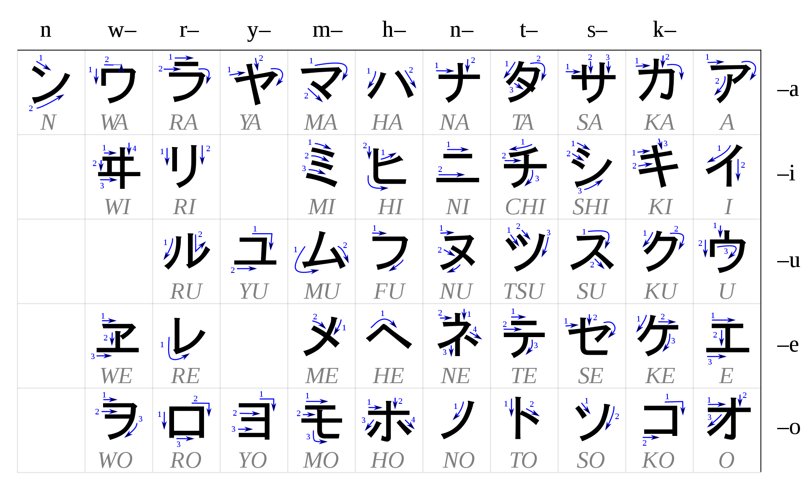

Introduction
This page will give you an introduction on how japanese works.
The sentence structure is based on Cure Dolly's lessons. Even if you already started learning japanese, I recommend reading it.
Writing Systems
The japanese writing systems is made with 3 kind of characters: Kanji, Hiragana and Katakana.Hiragana and Katakana represent sound, so they are always pronounced the same way, but there are used differently.
Katakana is used for foreign words (テレビ: "Terebi" = TV) so it's less frequent.
Here's an example:
アメリカ 人 です。
America - person - "is".
Pronouns can be omitted in japanese. like in this example. So this sentence could mean "I am american" or "He/She is american".
アメリカ (A-Me-Ri-Ka) is written in Katakana, like most foreign words.
人 (Jin) is a Kanji. It means person.
です (~ is) is written in Hiragana.
Hiragana
For the sake of simplification, consider that everything can be written in hiragana.Hiragana Chart :

Katakana
Katakana is used mostly for foreign words or onomatopoeia.It's the same sounds as hiraganas but written differently.
It's more rigid in appearance.
Like so : ひらがな (Hi Ra Ga Na) - カタカナ (Ka Ta Ka Na)
Katakana Chart:

Kanji
Kanjis are characters borrowed from chinese.They can represent an idea/concept, a sound or both.
They can be read in different very ways.
私 can be read わたし (watashi) or あたし (atashi).
You can think about them like emoticons :
I ❤️ japanese from the bottom of my ❤️.
❤️ is written the same but have different readings (love and heart in this exemple).
The reading are divided in two categories :
- on'yomi (from Chinese)
- kun'yomi (native Japanese)
Some kanjis can have a lot of different readings. That's why it's often recommended in your studies to only focus on the concept/meaning. and learn readings in the context of vocabulary.
However, there are a lot of different opinions on what is the "best way" to study kanjis.
Kanjis are made of small parts called radicals.
明 : bright (日: sun + 月: moon)
Those radicals can be Kanjis themselves.
- 山 (mountain)
- 木 (tree)
- 火 (fire).
Furigana
We saw that Kanji have different readings.To help knowing how to read the kanji, there can be the reading written above the Kanji.
It's written in hiragana and is called furigana.
Rōmaji
Rōmaji is a way to write japanese sound in english alphabet.It exists so you can pronounce japanese without being able to read it.
Example : ありがと (japanese) = arigato (rōmaji).
About the language
The Japanese language possesses a speech-level hierarchy that determines how one should address any given person based on various factors: relationship, age, role, respect, etc.Typically, Japanese learners are first introduced to polite speech. This is because polite speech is what is used in most daily interactions.
However, the greatest flaw made by introducing polite speech first lies in the fact that it is not the base form of speech.
Politeness is an auxiliary element to conversation. The purpose is not to provide information other than social implications.
Grammatically, plain speech is what makes up the base form of the language.
It's the basis for conjugation, to which politeness is then added.
As a rule of thumb, the longer the word (with a prefix like お) or the sentence, the more respectful it is.
Polite Suffix
Japanese use differents honorifics, usually attached to the name.Sama
The most formal honorific suffix is -sama, and it’s used for God (kami-sama) and royalty (ohime-sama).
San
The most common formal honorific is -san, it translates (approimately) to Ms. and Mr. .
Chan
This is an endearing female honorific. While it’s most commonly used for children, it’s also used fairly widely among family and friends.
Kun
This is the male equivalent of –chan, it’s used for kids and between peers and friends.
You'll also find the prefix お (O) and ご (Go) beforn noun to make it sound more polite.
Gender and plural
There is no gender and plural in japanese.It is understood by context.
In short sentences given as examples, more than one translation are possible.
学生 can mean student or students, and the student(s) can be a boy or girl.
Pronouns
Japanese usually avoid pronouns and use the person's name instead.Sentence Structure
Particles
In english, word order is very important to understand the meaning of a sentence.
Ex: John eats an apple / An apple eats John.
In Japanese however, word order is more flexible than in English.
That's because information is structured around particles.Particles, not word order, are what determines how each part of a sentence relates to the verb.
A usual japanese sentence names a subject, objects marked by particles and ends with the verb.
They are placed after the word they are attached to.
Ex: Johnが appleを eat. / Appleを Johnが eat.
Ex: Johnが appleを eat. / Appleを Johnが eat.
The particle が tells us that "John" is the one doing the action, and the particle を tells us that the verb applies to "apple".
Changing the word order didn't change the meaning of the sentence.
Note that this is for the sake of explanation and you'll never see a sentence structured like the second example.
A usual japanese sentence names a subject, objects marked by particles and ends with the verb.
The particle が
A lot of confusion happen for japanese learners between the 2 particles は and が.Textbooks usually start by making sentences using は because it's more common. The first lesson is usually A は B, translated as A is B.
However this gives the misconception that は means =.
So instead, we'll take the Cure Dolly's youtube channel approach.
It's more logical to start learning japanese by learning が first.
Let's consider that any sentence is either:
- A does B (B is a verb)
- A is B (B is either a noun or an adjective)
We can add more information about A or B to have longer sentences.
What's important is that the link between the two is made with the particle が.
が marks the doer of the action or the subject we're describing.
This is important to remember because future lesson will translate some grammar that will contradict it from the english point of view.
For example: I like X. / Xが 好き。
In english, "I" is the doer of the action, liking X.
In japanese, it's not "I" that is marked by が but "X".
Meaning is "X" is the doer of the action by being desirable.
This will help making sense of all japanese sentences in the future.
が marks the subject of the sentence.
Type of sentences
Verb Sentences
Ex: 桜が歩く / Sakuraが Aruku / Sakura walks
This is a simple A does B sentence.
In japanese, the verb always goes at the end of the sentence.
Noun / Copula Sentences
Ex: 桜が日本人だ / Sakuraが Nihonjin だ / Sakura is japanese
This is a simple A is B sentence.
The copula states that something is, like an equal sign. A=B
However it's not the verb to be. We'll see more about it soon.
Adjective Sentences
Ex: ペンが赤い / Penが akai / The pen is red
Another A is B sentence.
You'll notice that the sentence doesn't end with だ.
This is because 赤 (noun) means red, but 赤い (い-adjective) means "is red".
Consider that the da function, the equals function, is already built into those i-adjectives.
Conclusion
There are two kind of sentences :
- A does B
B is the verb: Aが B.
- A is B
B is a noun: Aが B だ.
B is an adjective (only い-adjective): Aが B.
Negative Sentences
To express a sentence in the negative form we use the い-adjective ない.It means nonexistent, not being.
Let's see our 3 types of sentences once more.
Verb Sentences
桜が歩く / Sakuraが Aruku / Sakura walks
桜が歩かない / Sakuraが Arukanai / Sakura does not walk
Adjective Sentences
ペンが赤い / Penが akai / The pen is red
ペンが赤くない / Penが akai / The pen is not red
Noun / Copula Sentences
桜が日本人だ / Sakuraが Nihonjin だ / Sakura is japanese
桜が日本人ではない / Sakuraが Nihonjin だ / Sakura is japanese
Conclusion
We'll see how the verbs, adjective and copula conjugate in detail for their respective lesson, but for now, just notice that we attach ない.
Omission
In japanese, you can convey a lot of information with a few words.Context, or social awareness plays a massive part in understanding the language.
Pronouns are usually omitted in japanese, the meaning of the sentence relies on the context of the situation.
Ex: ジョン だ can mean I'm John, he's John or it's John.
The actual sentence could be (私が) ジョン だ. (I'm) John.
But if someone ask for you name and you reply ジョンだ, the person will know you're talking about yourself. No need for pronoun.
But it goes further than just pronouns.
Ex: 土曜日 だ can mean it's monday, today is monday, the party is on monday...
Full sentence could use todayが or partyが, but it has been omitted.
Same goes with verbs.
- 食べる can mean I'm eating, or she's eating, or they're eating...
What's important to remember, is that the information is still there, we just don't need to mention it.
It becomes more important later one when you have longer sentences.
The particle は
We saw that particles give information and meaning to the sentence: が is the subject, を receive the action of the verb, we'll see particles for time, places ...は is a particle that indicates the topic of the sentence.
But it's important to understand that's it's not the subject, but the topic.
Which leads to confusion with が.
私が ジョン だ / I am John.
私は ジョン だ / As for me, (I am) John.
So what's the difference ?
Let's say that you're within a group ordering food and it's your turn to order.
私が すし だ / I am a sushi.
私は すし だ / As for me, (it's) sushi.
We know that pronoun depends on context, in the first case, it's the same, "私" (I).
But in the second example, the pronoun is "it".
私 is the topic of the sentence but the subject is the invisible "it".
Most textbooks start japanese with the sentence "A は B だ" and tell you that it means A is B.
But as you can see, it's not always the case.
But as you can see, it's not always the case.
は doesn't influence the meaning of the sentence, it only puts an emphasis because it indicates the topic.
Clauses
We saw there are 3 types of sentences depending on how they end: verb, い-adjective, copula.That entire sentence can in turn be used as a noun.
So we had A does B or A is B.
We can make BA does C or BA is C.
Verb Sentences
女が 歌る The woman sings.
歌る 女が 食べる The singing woman eats. (verb sentence)
歌る 女が 高い The singing woman is tall. (い-adjective sentence)
歌る 女が 大事 だ The singing woman is important. (copula sentence)
い-Adjective sentence
女が 高い The woman is tall.
高い 女が 食べる The tall woman eats. (verb sentence)
高い 女が 早い The tall woman is fast. (い-adjective sentence)
高い 女が 大事 だ The tall woman is important. (copula sentence)
Copula sentence
女が 大事 だ The woman is important.
大事な 女が 食べる The important woman eats. (verb sentence)
大事な 女が 高い The important woman is tall. (い-adjective sentence)
大事な 女が 大事 だ The important woman is important. (copula sentence)
As you can see, you just need to put the verb or the い-Adjective behind the noun.
大事 is used as a noun first, to use it as an adjective, you need to add な.
That's why those are called な-Adjectives.